Objektverwaltung
Object-Manager
Übersicht Objektverwaltung
Die Objektverwaltung ist ein andockbares Bedienfeld, das standardmäßig auf der rechten Seite des Arbeitsbereichs geöffnet wird. Die Objektverwaltung hilft Ihnen beim schnellen Bearbeiten des aktuellen aktiven Fensters.
- Wählen Sie Ansicht: Objektverwaltung im Hauptmenü. Oder drücken Sie die Tastenkombination Alt + 8.
- Klicken Sie mit der rechten Maustaste auf die Titelleiste der Objektverwaltung, um das Fenster automatisch frei zu bewegen, anzudocken, zu verbergen oder automatisch im Vordergrund zu verbergen.
- Ein Doppelklick auf die Titelleiste kann die Objektverwaltung ebenfalls andocken oder frei beweglich machen.
- Klicken Sie mit der rechten Maustaste auf den weißen Bereich in der Objektverwaltung, um die Option Minisymbolleisten auszuwählen.
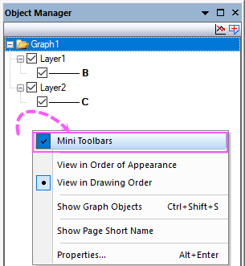
- Bei aktivem Diagramm-/Arbeitsmappen-/Layoutfenster fügen/verbergen/zeigen Sie Notizfenster für die Seite, indem Sie auf Notizen hinzufügen / Notizen verbergen / Notizen zeigen in der oberen rechten Ecke der Objektverwaltung klicken.
Datenzeichnungen oder Diagrammobjekte im aktiven Diagrammfenster verwalten
Datenzeichnungen verwalten
Standardmäßig ist der Modus Zeichnungen zeigen aktiviert, wobei die Schaltfläche Zeichnungen zeigen  angezeigt wird. Die Objektverwaltung ist ein Fenster mit einem Bedienfeld, das in einer Baumstruktur zeigt, welche Zeichnungen sich im Diagrammfenster befinden -- Layer, ggf. Gruppen, Zeichnungen und ggf. spezielle Punkte.
angezeigt wird. Die Objektverwaltung ist ein Fenster mit einem Bedienfeld, das in einer Baumstruktur zeigt, welche Zeichnungen sich im Diagrammfenster befinden -- Layer, ggf. Gruppen, Zeichnungen und ggf. spezielle Punkte.
- (a). Jedes Zeichnungselement besteht aus einem Symbol (das Miniaturbild einer Farbskala bei Kontur oder Oberfläche mit Farbabbildung) und dem darauf folgenden Zeichnungsnamen.
- (b). Der Zeichnungsname ist programmatisch mit den Quelldaten verknüpft, wie z.B. die Diagrammlegende.
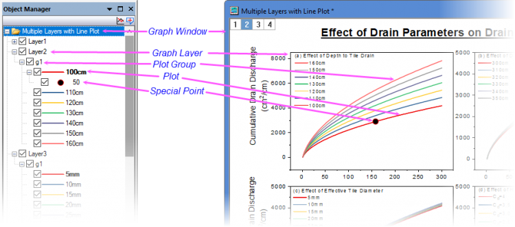
 |
Beim benutzerdefinierten Anpassen der Legende mit benutzerdefinierter Syntax im Textobjekt des Dialogs Eigenschaften oder Details Zeichnung zeigt die Objektverwaltung genau dasselbe an wie die Legende auf dem Diagramm.
|
Diagrammobjekte verwalten
Wechseln Sie in den Modus Diagrammobjekte zeigen, indem Sie auf die Schaltfläche Diagrammobjekte zeigen klicken. Die Objektverwaltung zeigt in einer Baumstruktur, welche Diagrammobjekte im Diagrammfenster enthalten sind -- Layer, Achsen, Diagrammobjekte (Achsentitel, Legende, Text- oder Zeichenobjekte etc.).
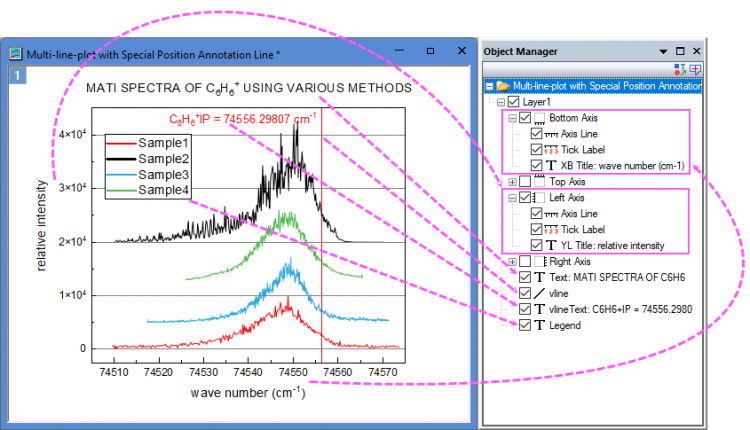
Hinweis:
- Alle Textobjekte zeigen ihren Inhalt an mit der maximalen durch die Systemvariable @OMTL festgelegte Textlänge (Standardwert sind 20 Zeichen).
- Alle Achsen werden als Baumknoten aufgeführt und schließen Achsenlinie, Hilfsstrichsbeschriftung und Achsentitel mit ein. Um die Achsen bzw. Achsenelemente zu zeigen oder zu verbergen, können Sie die Kontrollkästchen vor den Knoten aktivieren oder deaktivieren.
- Wenn ein Objekt nicht sichtbar ist (sich z. B. außerhalb des Seitenbereichs befindet), zeigt das Objekt den grauen Hintergrund in der Objektverwaltung.
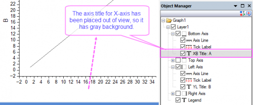
Blätter in der aktiven Arbeitsmappe und dem aktiven Matrixfenster verwalten
Es handelt sich um ein Fenster mit einem Bedienfeld, das in einer Baumstruktur zeigt, welche Elemente sich im Arbeitsmappen-/Matrixfenster befinden -- Mappen und Blätter. Der Kurzname der Arbeitsmappe und der Name und die Beschriftung des Blatts werden aufgelistet.
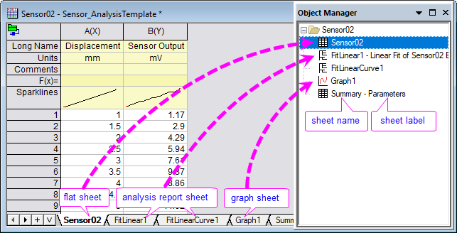
Wechselwirkung zwischen Objektverwaltung und Diagrammfenster
In den Ansichtsmodus wechseln
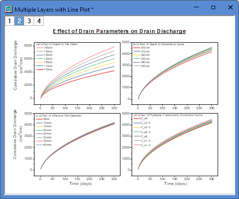
Ansichtsmodi: Zeichnungen oder Diagrammobjekte zeigen
- Zeichnungen zeigen: Die Zeichnungen in der aktuellen Grafik werden gezeigt. In der oberen rechten Ecke gibt es eine kleine Schaltfläche Zeichnungen zeigen, um den Status der Ansichtsmodi anzuzeigen. (Standard)
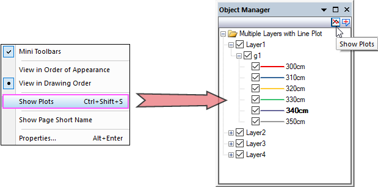
- Diagrammobjekte zeigen: Die Diagrammobjekte werden gezeigt, einschließlich Zeichenobjekte, Textobjekt, Legenden, Farbskala und Achsentitel und so weiter. In der oberen rechten Ecke gibt es eine kleine Schaltfläche Diagrammobjekt zeigen, um den Status der Ansichtsmodi anzuzeigen.
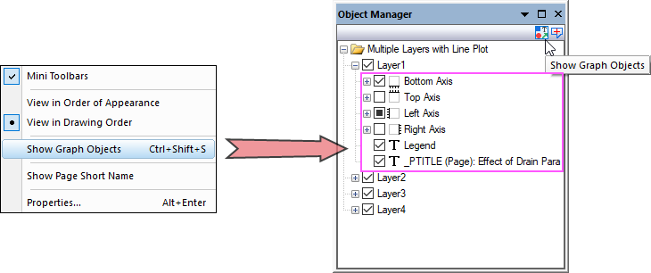
- Klicken Sie mit rechten Maustaste auf den leeren Bereich oder auf den Grafikknoten in der Objektverwaltung, um Diagrammobjekte zeigen oder Zeichnungen zeigen auszuwählen und damit den Ansichtsmodus zu wechseln.
- Klicken Sie auf die kleine Schaltfläche oder in der oberen kleinen Ecke, um den Ansichtsmodus zu wechseln.
- Drücken Sie die Tastenkombination Strg+Shift+S, um den Status zu wechseln.
Ansichtsmodi nach Reihenfolge
Klicken Sie mit der rechten Maustaste auf den leeren Bereich unter den Zeichnungen oder klicken Sie mit der rechten Maustaste auf den Grafikknoten. Sie können In Reihenfolge des Auftretens anzeigen oder In Zeichnungsreihenfolge anzeigen wählen, um den Ansichtsmodus der Zeichnungen in der aktuellen Grafik zu ändern:
- In Reihenfolge des Auftretens anzeigen: Die Zeichnungen werden in der Reihenfolge ihres Auftretens in der Grafik angezeigt.
- In Zeichnungsreihenfolge anzeigen: Die Zeichnungen werden in der Reihenfolge ihres Zeichnens angezeigt.
Modus "Zeichnungen zeigen": Operationen auf Zeichnungen
Klicken Sie mit der rechten Maustaste auf eine Zeichnung oder mehrere ausgewählte Zeichnungen innerhalb einer Gruppe in der Objektverwaltung. Sie sehen einige spezifische Operationen im Kontextmenü.
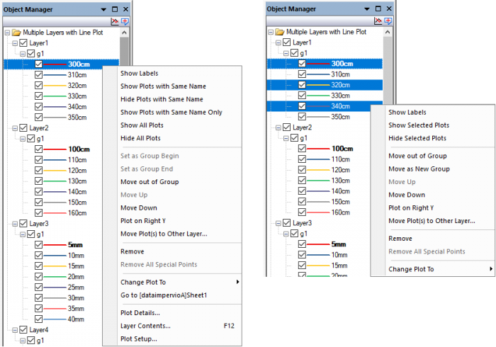
Wenn Sie die Minisymbolleisten aktiviert haben, klicken Sie auf eine Zeichnung. Die zugehörige Minisymbolleiste wird als Popup angezeigt. Das Auswählen eines Liniendiagramms innerhalb einer Gruppe wird zum Beispiel die unten gezeigte Minisymbolleiste aufrufen:
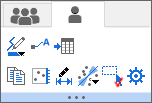
Diagrammelement auswählen
Wählen Sie ein Element (Layer, Zeichnungsgruppe, Datenzeichnung oder spezieller Punkt) in der Objektverwaltung, um das entsprechende Element in dem Diagrammfenster auszuwählen und umgekehrt. Hinweis: Wenn eine Zeichnung Teil einer Zeichnungsgruppe ist, wird durch einmaliges Klicken die Gruppe ausgewählt. Durch zweimaliges Klicken wird die Einzelzeichnung ausgewählt.
Bei einem Diagrammlayer mit Punkt-, Linine- oder Punkt-Liniendiagrammen blendet das Auswählen einer einzelnen Zeichnung in der Objektverwaltung, wie unten zu sehen, die anderen Zeichnungen im Layer ab. Wenn Sie dagegen eine einzelne Zeichnung im Diagrammfenster auswählen, werden die anderen Zeichnungen im Layer abgeblendet (siehe den Hinweis unten zu @PSFF).
-
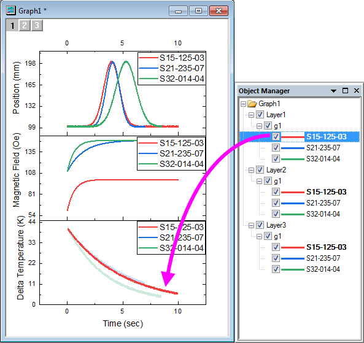
- In der Objektverwaltung können Sie die Auswahl mit Hilfe der Pfeiltasten nach oben und unten verschieben; im Diagramm verschieben Sie die Zeichnungsauswahl mit den Pfeiltasten nach links und rechts.
- Sie können Fehlerbalken nicht separat auswählen. Wenn Sie eine Zeichnung auswählen, die Fehlerbalken hat, folgt die Abblendung der Fehlerbalken der Hauptzeichnung.
- Sollte es mehrere Layer geben, prüft Origin, ob die Layer sich überschneiden. Wenn Sie eine Zeichnung auswählen, blendet Origin alle anderen Zeichnungen aus, einschließlich Zeichnungen in den sich überschneidenden Layern. Zeichnungen in Layern, die sich nicht überschneiden, werden nicht abgeblendet.
- Wenn Sie eine Zeichnung auswählen, wird diese Zeichnung die aktive Zeichnung.
- Sie dürfen gleichzeitig nur eine Zeichnung auswählen, auch wenn Sie die Tastenkombination "Strg + Klick" und "Shift + Pfeiltaste" wie in der Objektverwaltung eines Arbeitsmappenfenster verwenden.
- Wenn Sie eine Gruppe in der Objektverwaltung auswählen (dort mit gN gekennzeichnet), werden alle Zeichnungen innerhalb von diesen markiert, indem alle Datenpunkte fett angezeigt werden. Sie können die Systemvariablen @DTB verwenden, um die Anzahl der markierten Datenpunkte von jeder Zeichnung festzulegen.
Hinweis: Sie können die Systemvariable @PSFF verwenden, um den Grad (in %) der Abblendung für die nicht ausgewählten Zeichnungen festzulegen. Der Standardwert ist 25. Durch das Festlegen auf einen negativen Wert wird der Auswahlmodus der Abblendung deaktiviert und das alte Auswahlverhalten wieder aktiviert (alle Datenpunkte werden fett angezeigt), wie unten zu sehen:
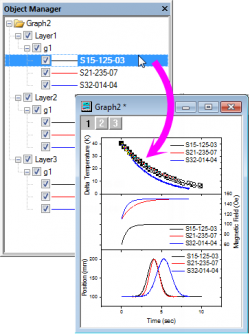
|
Zeichnungen verbergen/zeigen
-
- Verbergen/zeigen Sie ein Element (Layer, Gruppe, Zeichnung, Spezieller Punkt und Diagrammobjekte), indem Sie das Kontrollkästchen vor dem Element aktivieren/deaktivieren.
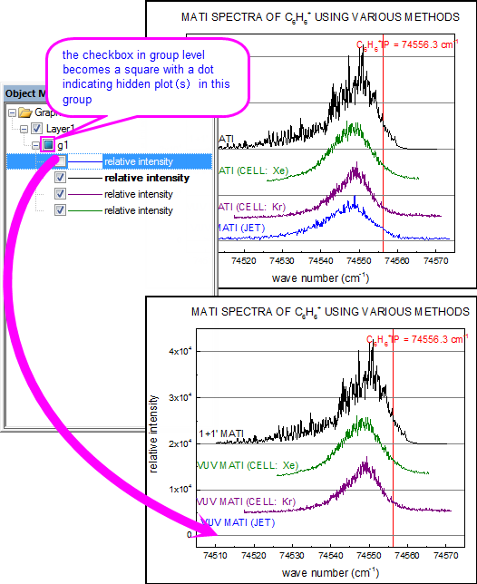
- Verbergen/zeigen Sie eine Reihe von Zeichnungen mit dem gleichen Namen, indem Sie mit der rechten Maustaste auf eine der Zeichnungen klicken und Zeichnung mit gleichem Namen verbergen/zeigen auswählen.
- Zeigen Sie eine Reihe von Zeichnungen mit diesem spezifischen Namen und verbergen sie alle anderen, indem Sie mit der rechten Maustaste auf eine der Zeichnungen klicken und Zeichnung mit gleichem Namen zeigen auswählen.
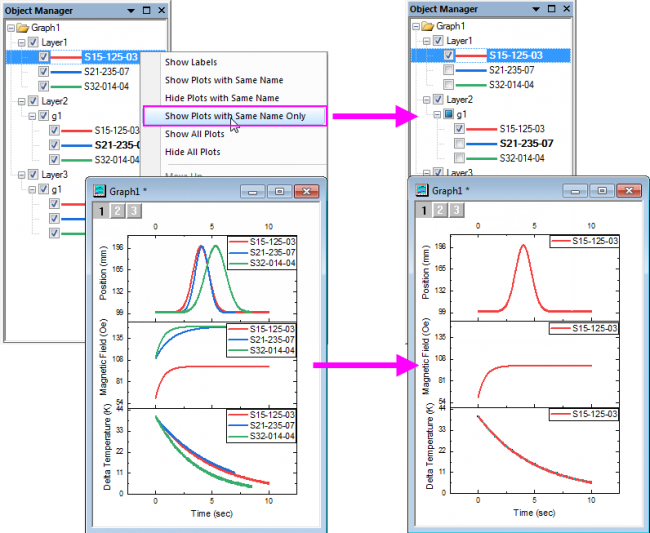
- Zeigen Sie alle Zeichnungen in dem Diagramm, indem Sie mit der rechten Maustaste auf eine der Zeichnungen klicken und Alle Zeichnungen zeigen auswählen..
- Verbergen Sie alle Zeichnungen in dem Diagramm, indem Sie mit der rechten Maustaste auf eine der Zeichnungen klicken und Alle Zeichnungen verbergen auswählen..
|
Bei der Arbeit mit importierten Shapefiles (.shp) können Sie Funktionen von Shapefiles (Punkte, Polylinien, Polygone) im Diagrammfenster und in der Objektverwaltung zur Verfügung stellen machen, indem Sie mit der rechten eine Komponente klicken und ein Häkchen neben Auswählbar platzieren. Um zu verhindern, dass eine Komponente ausgewählt wird, entfernen Sie das Häkchen.
-
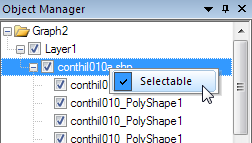
|
Matrixobjekt / Z-Titel der virtuellen Matrix umbenennen
Der Langname des Matrixobjekts / Z-Titel der virtuellen Matrix kann mit der Objektverwaltung für das Diagramm benutzerdefiniert angepasst werden.
Erstellen Sie ein Kontur-/3D-Diagramm mit Matrix oder virtueller Matrix. Klicken Sie bei aktivem Diagrammfenster mit der rechten Maustaste auf die Zeichnung in der Objektverwaltung und wählen Sie im Kontextmenü Umbenennen. Sie können dann den Langnamen für das Matrixobjekt oder die virtuelle Matrix eingeben.
Hinweis: Benennen Sie hier den Langnamen des Matrixobjekts oder der virtuellen Matrix um, nicht aber den Langnamen des Diagramms.
Um das Matrixobjekt umzubenennen, können Sie auch den Dialog Matrixeigenschaften verwenden.
Um die virtuelle Matrix umzubenennen, können Sie auch den Dialog Virtueller Matrixmanager verwenden.
Zeichnungen innerhalb der Gruppe verschieben
Die Zeichnungsreihenfolge des Layers wird durch die Reihenfolge der Zeichnungen in der Liste Layerinhalt/Diagrammeinstellungen - Objektverwaltung festgelegt. Die Zeichnungen werden gemäß der Listenreihenfolge gezeichnet, d. h., die erste Zeichnung oben in der Liste wird zuerst gezeichnet und die Zeichnung ganz unten als Letztes. Daher hat die Zeichnungsreihenfolge Einfluss auf die sich überschneidenden Zeichnungen und auf die Zuweisung der Zeichnungsstile über die Inkrementliste in gruppierte Zeichnungen.
- Wählen Sie eine Zeichnung, klicken Sie mit der rechten Maustaste und wählen Sie Nach oben verschieben oder Nach unten verschieben, um die Zeichnung in der Liste nach oben und unten zu verschieben, einschließlich innerhalb einer Gruppe (d. h. unterhalb eines gN-Elements). Um die Symbol-/Linienfarbe einer Zeichnung beim Verschieben innerhalb einer Gruppe beizubehalten, klicken Sie mit der rechten Maustaste auf den Gruppenknoten (z. B. g1), um Editiermodus: Unabhängig vor dem Neuordnen der Zeichnungen auszuwählen.
Zeichnungen in die und aus der aktuellen Gruppe verschieben; eine neue Gruppe hinzufügen
Verwenden Sie die folgenden Befehle der Objektverwaltung, um eine neue Gruppe zu erstellen oder Zeichnungen aus einer Gruppe zu entfernen:
- Als Gruppenanfang festlegen: Gruppieren Sie diese Zeichnung und die Zeichnungen "unterhalb" der ausgewählten Zeichnung als eine neue Gruppe. Zeichnungen oberhalb dieser Zeichnung behalten die ursprüngliche Gruppe bei.
- Als Gruppenende festlegen: Gruppieren Sie diese Zeichnung "unterhalb" der ausgewählten Zeichnung als eine neue Gruppe. Diese Zeichnung und Zeichnungen oberhalb dieser Zeichnung behalten die ursprüngliche Gruppe bei.
- Aus der Gruppe verschieben: Verschieben Sie die ausgewählte Zeichnung aus der Zeichnungsgruppe heraus. Dies entfernt die Zeichnung nicht aus dem Diagrammfenster. Dazu müssten Sie die Option Entfernen verwenden.
- Um Zeichnungen zwischen Gruppen zu verschieben (innerhalb oder zwischen Layern), ziehen Sie Zeichnungen einfach in der Objektverwaltung. Beachten Sie, dass Sie eine Zeichnung nicht zu einem leeren Layer ziehen können (siehe Zeichnungen zu anderen Achsen oder Layern verschieben).
Auf rechter/linker Y-Achse zeichnen
Seit Origin 2023 können Sie eine rechte Y-Achse hinzufügen, ohne einen Layer zum Diagramm hinzufügen zu müssen. Es gibt drei Methoden, dies zu tun. Zwei dieser Methoden werden über die Objektverwaltung durchgeführt:
- Verwenden Sie die Bedienelemente von Details Zeichnung, um die andere Y-Achse (rechts oder links) einzublenden, und weisen Sie der Achse eine oder mehrere Zeichnungen zu.
- Markieren Sie in der Objektverwaltung das Symbol der Zeichnung, die Sie gegen die rechte Y-Achse zeichnen möchten, und (a) klicken Sie mit der rechten Maustaste auf das Symbol und wählen Sie im Kontextmenü die Option Auf rechter Y zeichnen oder (b) klicken Sie auf die Schaltfläche Auf rechter Y zeichnen auf der Minisymbolleiste.
-

Wenn eine rechte Y-Achse zum Layer hinzugefügt wird, zeigen Daten, die gegen die rechte Y-Achse gezeichnet werden, ein (R) an, das dem Datensatznamen vorangestellt wird. Die Daten, die gegen die linke Y-Achse gezeichnet werden, zeigen ein (L) vor dem Datensatznamen.
-
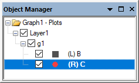
Zeichnungen zwischen Layern verschieben
-
Auf rechter/linker Y-Achse zeichnen: Verwenden Sie diesen Shortcutbefehl der Objektverwaltung, um gleichzeitig die rechte/linke Y-Achse zu erstellen und die ausgewählte Zeichnung in diese Achse zu verschieben. Dieses Verhalten erstellt keinen neuen Layer, sondern zeigt nur die zweite Y-Achse des aktuellen Layers und erstellt auf ihr die zweite Zeichnungsbasis. Wenn die linke und rechte Y-Achse gezeigt werden, wird die Beschriftung (R) oder (L) vor dem Zeichnungsnamen eingefügt, um die Achse zu kennzeichnen, auf die Zeichnung basiert.
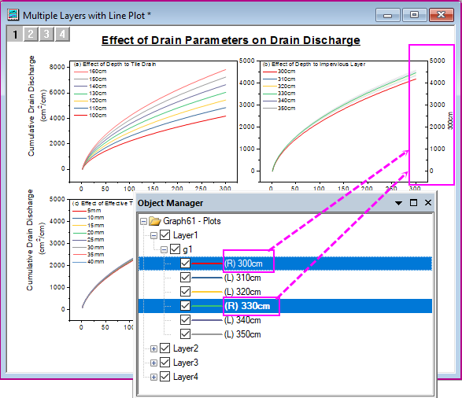
- Zeichnung(en) zu anderem Layer verschieben: Verwenden Sie diesen Kontextmenübefehl der Objektverwaltung, um die ausgewählte Zeichnung in einen anderen Layer zu verschieben. Das Auswählen dieses Kontextmenüs öffnet den Dialog Zeichnung verschieben: laymplot. In diesem Dialog können Sie die Zeichnung(en), die Sie verschieben möchten, den Ziellayer und die Einstellungen des neuen Layers festlegen.
Beachten Sie, dass Sie in einigen Situationen die Zeichnungen einfach zwischen Layern hin- und herziehen können. Sollte dies nicht unterstützt werden, können Sie diesen Menübefehl verwenden, um die ausgewählte Zeichnung zum Layer hinzuzufügen.
Eine Zeichnung oder spezielle Punkte entfernen
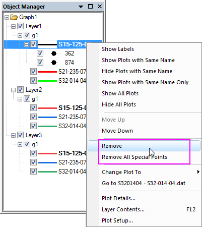
-
- Sie können eine Zeichnung aus der Grafik entfernen, indem Sie mit der rechten Maustaste auf die Zeichnung klicken und Entfernen im Kontextmenü auswählen. Die Zeichnungen unterhalb der entfernten Zeichnung werden nach oben verschoben und neue Zeichnungsindexe zugewiesen. Beachten Sie, dass Entfernen die Zeichnung aus der Grafik entfernt. Wenn Sie eine Zeichnung temporär verbergen möchten, wählen Sie Datenzeichnungen verbergen im Diagrammfenster oder deaktivieren Sie das Kontrollkästchen neben der Zeichnung in der Objektverwaltung.
- Sie können alle speziellen Datenpunkte in einer Zeichnung entfernen, indem Sie Alle speziellen Punkte entfernen im Kontextmenü auswählen.
- Um spezielle Punkte einzeln zu entfernen, klicken Sie mit der rechten Maustaste auf einen speziellen Punkt und wählen Sie Entfernen im Kontextmenü. Oder wählen Sie einfach den speziellen Punkt in der Zeichnung oder der Objektverwaltung und drücken Sie ENTFERNEN.
Den Diagrammtyp schnell ändern
-
- Um schnell einen Diagrammtyp zu ändern, wählen Sie das Zielelement der Zeichnung, klicken Sie mit der rechten Maustaste und wählen Sie Diagramm ändern in: gewünschten Diagrammtyp.
Zur Quellarbeitsmappe gehen
-
- Um die Quellarbeitsmappe einer Zeichnung zu aktivieren, wählen Sie das Zielelement der Zeichnung, klicken Sie mit der rechten Maustaste und wählen Sie Zur Quellarbeitsmappe gehen.
Dialoge Details Zeichnung, Layerinhalt und Diagrammeinstellungen öffnen
-
- Kontextmenüs auf Diagramm-, Layer- und Zeichnungsebene bieten Optionen zum Öffnen der Dialoge Details Zeichnung, Layerinhalt und Diagrammeinstellungen. Die aktive Ebene/Zeichnung im Dialog, der aufgerufen wird, variiert in Abhängigkeit von der Ebene/dem Zeichnungselement, auf das Sie mit der rechten Maustaste geklickt haben.
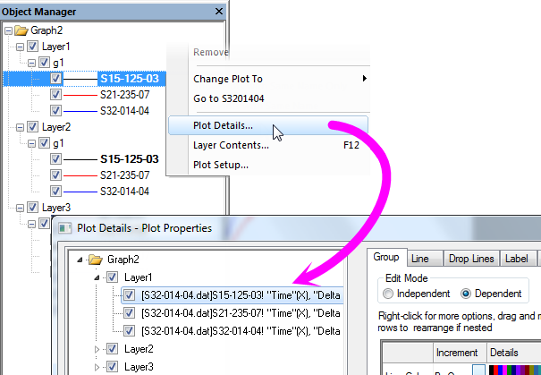
|
Um den Dialog Details Zeichnung zu öffnen, können Sie auch doppelt auf ein Element klicken, um den Dialog mit dem ausgewählten Element zu öffnen.
|
Modus "Zeichnungen zeigen": Operationen auf eine Gruppe
Für eine Gruppe gibt es einige spezifische Operationen. Sie können mit der rechten Maustaste auf die Gruppenzeile klicken, um das Kontextmenü zu zeigen:
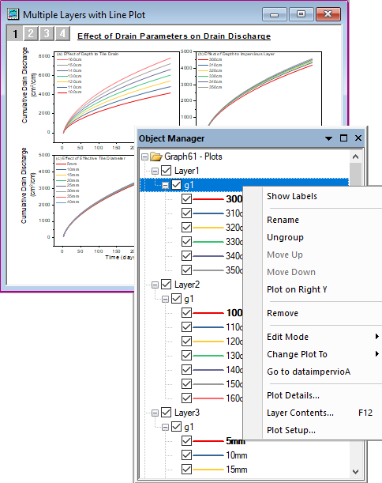
Wenn Sie die Minisymbolleisten aktiviert haben, klicken Sie auf eine Gruppenzeile unten:

Eine Gruppe umbenennen
Klicken Sie mit der rechten Maustaste auf eine Gruppe und wählen Sie Umbenennen. Der Gruppenname (Langname) ist im Bearbeitungsmodus. Sie können dann einen neuen Namen eingeben. Dieser Gruppenname wird in der Zeichnungsliste unten im Hauptmenü Daten gezeigt. Er wird außerdem als Tooltipp im Dialog Layerinhalt angezeigt, wenn man mit der Maus über die Gruppenspalte fährt.
Gruppierung der Zeichnungen aufheben
Klicken Sie mit der rechten Maustaste auf eine Gruppe, um Gruppierung aufheben auszuwählen und die Gruppierung aller Zeichnungen in der aktuellen Gruppe aufzulösen.
Um diese Zeichnungen erneut zu gruppieren oder einige nachfolgende Zeichnungen zu gruppieren, klicken Sie mit der rechten Maustaste auf die erste Zeichnung, die Sie gruppieren möchten, wählen Sie im Kontextmenü Als Gruppenanfang festlegen. Alle nachfolgenden Zeichnungen werden dann mit dieser ersten Zeichnung gruppiert.
Gruppierte Zeichnungen neu ordnen
Obwohl die Zeichnungen in einer Gruppe als eine Einheit behandelt werden, können Sie sie auch neu ordnen, indem Sie mit der rechten Maustaste auf eine Zeichnung klicken und im Kontextmenü Nach oben verschieben und Nach unten verschieben verwenden.
Eine Gruppe entfernen
Klicken Sie mit der rechten Maustaste auf eine Gruppe, um Entfernen auszuwählen und die gesamte Gruppe von Zeichnungen aus dem aktuellen Layer zu entfernen. Sie können im Hauptmenü Bearbeiten: Rückgängig auswählen oder Strg+Z drücken, um das Entfernen rückgängig zu machen.
Bearbeitungsmodus für die gruppierten Zeichnungen ändern
Klicken Sie mit der rechten Maustaste auf eine Gruppe, um Bearbeitungsmodus: Abhängigkeit oder Bearbeitungsmodus: Unabhängigkeit auszuwählen. Damit ändern Sie den Bearbeitungsmodus der Zeichnungen in dieser Gruppe.
Diagrammtyp für gruppierte Zeichnungen ändern
Klicken Sie mit der rechten Maustaste auf eine Gruppe, um Diagramm ändern in: ### auszuwählen und den Diagrammtyp der aktuellen Gruppe zu ändern.
Zu Quellmappe gehen
Gehen Sie zur Arbeitsmappenquelle oder -matrixmappe der Zeichnungen in der aktuellen Gruppe.
Zu anderen verwandten Dialogen gehen
Klicken Sie mit der rechten Maustaste auf die Gruppe, um Details Zeichnung ... oder Layerinhalt ... oder Setup Diagramm ... im Kontextmenü auszuwählen und zu einem anderen zugehörigen Dialog zu wechseln.
Modus "Zeichnungen zeigen": Operationen auf einen Layer
Es gibt einige spezifische Operationen für einen Layer. Sie können mit der rechten Maustaste auf den Layerknoten klicken, um das Kontextmenü zu zeigen:
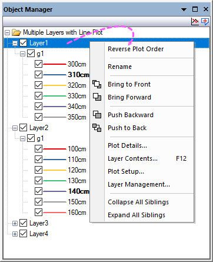
Wenn Sie die Minisymbolleisten aktiviert haben, klicken Sie auf den Layer und Ihnen wird folgende Minisymbolleiste angezeigt:
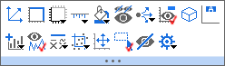
Wenn mehrere Layer ausgewählt wurden, wird die Minisymbolleiste, wie unten zu sehen, angezeigt:

Zeichnungsordnung in einem Layer umkehren
Wenn Sie mehrere Zeichnungen in einem Layer gezeichnet haben, können Sie mit der rechten Maustaste auf den Layerknoten in der Objektverwaltung klicken, um Zeichnungsordnung umkehren auszuwählen. Damit wird die Reihenfolge aller Zeichnungen im aktuellen Layer umgekehrt.
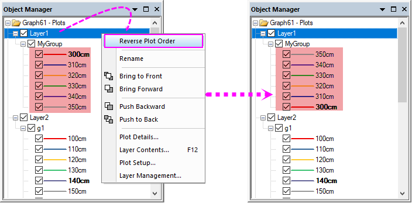
Bitte beachten Sie, dass Origin die Diagrammeigenschaften für gruppierte Zeichnungen beibehält, wenn die Reihenfolge umgekehrt wird. Wenn also die Inkrementeigenschaft der gruppierten Zeichnungen nicht Keine ist, sollten wir die Inkrementliste aktualisieren, so dass jede Zeichnung den gleichen Stil hat, nachdem die Zeichnungsreihenfolge umgekehrt wurde.
Layer umbenennen
Sie können im Kontextmenü die Option Umbenennen wählen, um den Layernamen zu ändern, und der Layerindex wird beibehalten.
Layerreihenfolge und Zeichnungsreihenfolge ändern
Wenn Sie auf einen Layer in der Objektverwaltung klicken, wird der Layer in der Grafik ausgewählt (die Auswahlelement werden zur besseren Übersicht nicht angezeigt). Sie können die Kontextmenübefehle In den Vordergrund verschieben, Nach vorn verschieben, Nach hinten verschieben oder In den Hintergrund verschieben verwenden, um die Zeichnungsreihenfolge der Layer anzupassen.
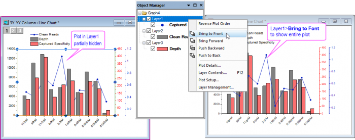
|
Einige wissenswerte Fakten:
- Das Neuordnen der verknüpften Layer erzeugt eine Warnmeldung zum Unterbrechen von Links zu Hauptlayern. Zum Zwecke der Neuordnung von Layern können Sie bestehende Links sicher unterbrechen, solange Sie danach keine Dinge ändern wie die relativen Layerpositionen oder Achsenskalierungen.
- Abgesehen von der Layerreihenfolge kann die Zeichnungsreihenfolge von der Einstellung Zeichnungsreihenfolge auf der Registerkarte Layer im Dialog Details Zeichnung beeinflusst werden. Weitere Informationen finden Sie auf dieser Seite.
|
Alle Geschwister minimieren/erweitern
Sie können alle Zeichnungen unter allen Layern minimieren oder erweitern, indem Sie im Kontextmenü Alle Geschwister minimieren oder Alle Geschwister erweitern wählen.
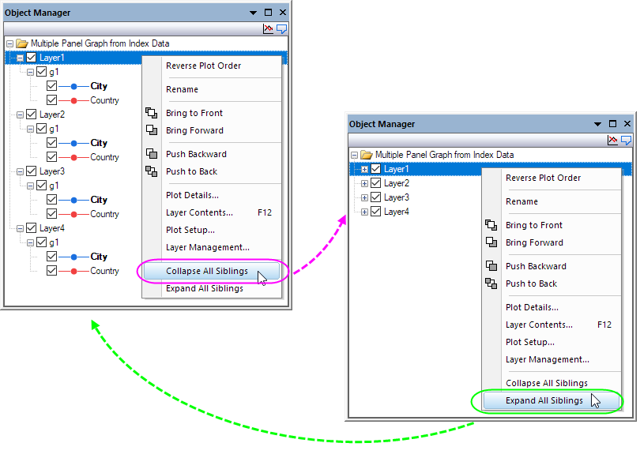
Modus "Diagrammobjekte zeigen": Operationen auf Diagrammobjekte
Um die Diagrammobjekte in der Objektverwaltung zu verwalten, klicken Sie mit der rechten Maustaste auf den weißen Bereich oder auf den Diagrammknoten in der Objektverwaltung und wählen Sie Diagrammobjekte zeigen aus. Oder klicken Sie auf die Schaltfläche Zeichnungen zeigen , um den Ansichtsmodus zu wechseln.
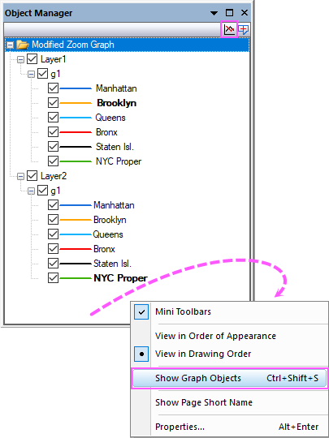
Hinweis: Wenn Sie die Minisymbolleisten aktiviert haben, klicken Sie auf ein Objekt. Die zugehörige Minisymbolleiste wird als Popup angezeigt.
Ein Diagrammobjekt oder mehrere Objekte auswählen
Diagrammobjekt auswählen
Wählen Sie ein Diagrammobjekt in der Objektverwaltung, um das entsprechende Diagrammobjekt im Diagrammfenster auszuwählen und umgekehrt. Die Minisymbolleiste wird auch angezeigt, wenn Sie das Objekt schnell benutzerdefiniert anpassen möchten.
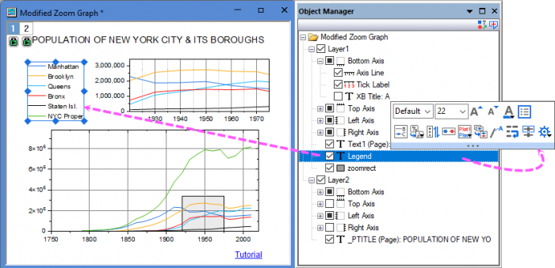
Alle Objekte mit gleichem Namen auswählen
Sie können die Option Alle mit gleichem Namen auswählen im Kontextmenü nutzen, um alle Objekte mit dem gleichen Namen auf der aktuellen Seite auszuwählen. Sobald all diese Objekte ausgewählt wurden, klicken Sie auf eines. Die Minisymbolleiste sollte nun angezeigt werden, um alle zusammen benutzerdefiniert anpassen zu können.
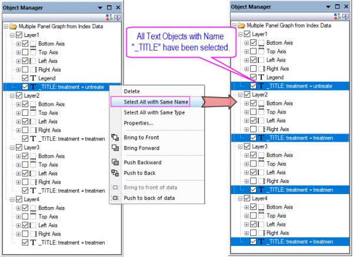
Alle Objekte mit gleichem Typ auswählen
Sie können die Option Alle mit gleichem Typ auswählen im Kontextmenü nutzen, um alle Objekte mit dem gleichen Typ auf der aktuellen Seite auszuwählen. Sobald all diese Objekte ausgewählt wurden, klicken Sie auf eines. Die Minisymbolleiste sollte nun angezeigt werden, um alle zusammen benutzerdefiniert anpassen zu können.
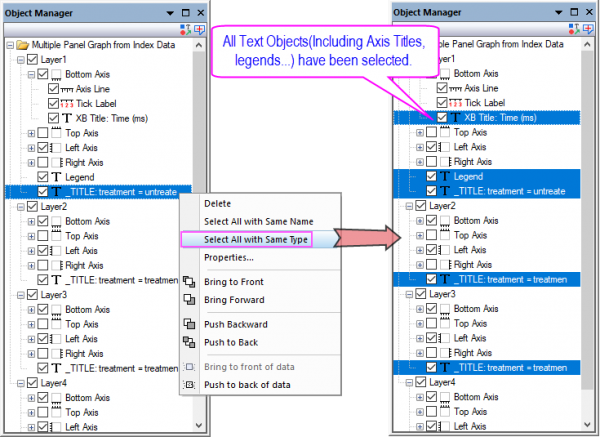
Gleichen Knoten für alle Achsen auswählen
Da alle Achsenelemente als Knoten für jeden Layer aufgelistet werden, können Sie mit der rechten Maustaste auf eine Achse oder ein Achsenelement klicken, um im Kontextmenü Gleichen Knoten für alle Achsen auswählen auszuwählen und damit die gleichen Knoten für alle Achsen in allen Layern.
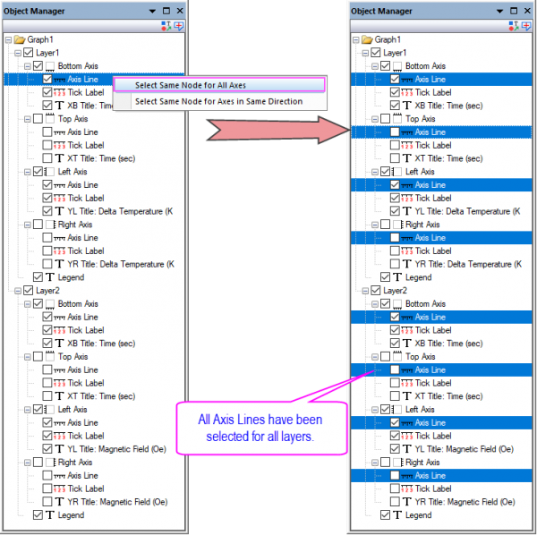
Gleichen Knoten für Achsen in der gleichen Richtung auswählen
Da alle Achsenelemente als Knoten für jeden Layer aufgelistet werden, können Sie mit der rechten Maustaste auf eine Achse oder ein Achsenelement klicken, um im Kontextmenü Gleichen Knoten für Achsen in der gleichen Richtung auswählen auszuwählen und damit die gleichen Knoten für alle Achsen in der gleichen Richtung in allen Layern.
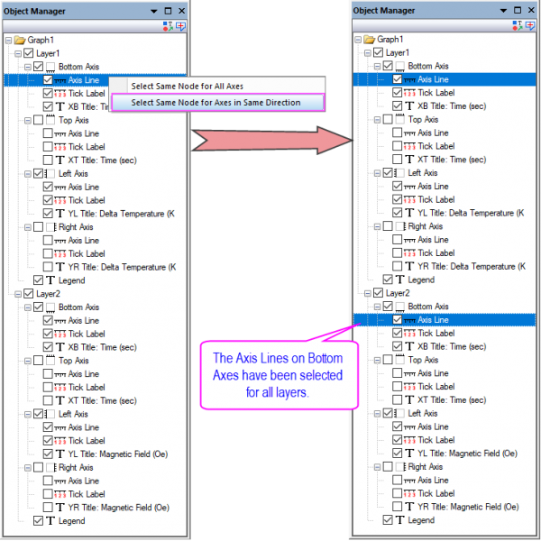
Mehrere Objekte mit gedrückter Strg- oder Shift-Taste auswählen
Klicken Sie bei gedrückter Strg-/Shift-Taste auf mehrere Layer/Zeichnungen/Diagrammobjekte, um sie auszuwählen. Sie können sie gleichzeitig benutzerdefiniert anpassen.
Ein Diagrammobjekt löschen
Um ein Objekt (kein/e Achse bzw. Achsenelement) zu löschen, klicken Sie mit der rechten Maustaste auf sie und wählen Sie Löschen im Kontextmenü.
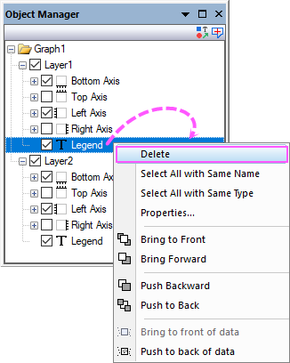
Diagrammobjekt verbergen/zeigen
Ein Diagrammobjekt durch Deaktivierung/Aktivierung des Kontrollkästchens vor dem Element verbergen/zeigen.
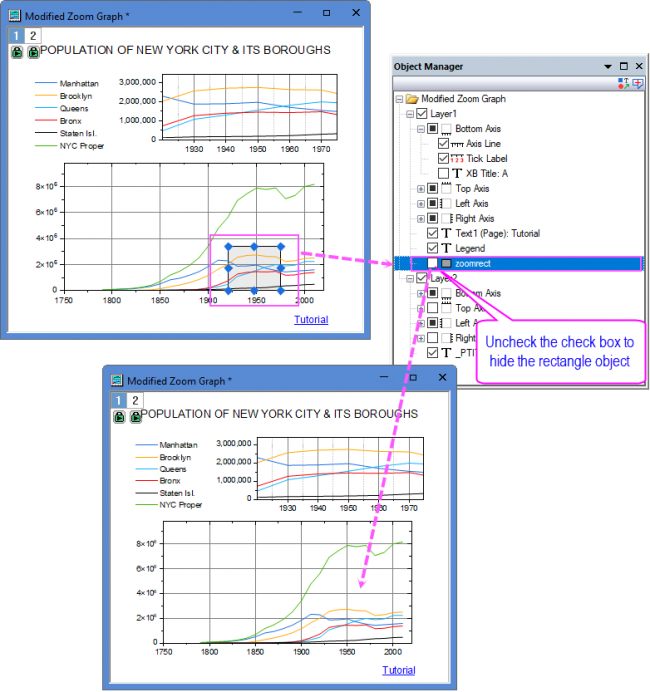
|
Objekte des gleichen Typs in allen Layern verbergen/zeigen
- Klicken Sie im Modus Diagrammobjekte zeigen mit der rechten Maustaste auf das Objekt und wählen Sie Alle Objekte mit gleichem Typ auswählen.
- Verwenden Sie die Minisymbolleistenschaltfläche
 , um Objekte des gleichen Typs ein- und auszublenden. , um Objekte des gleichen Typs ein- und auszublenden.
|
Objekteigenschaften bearbeiten
Um die Objektverwaltung zu öffnen, können Sie eine dieser drei Möglichkeiten wählen:
- Klicken Sie doppelt auf das Element des Diagrammobjekts in der Objektverwaltung.
- Klicken Sie in der Objektverwaltung mit der rechten Maustaste auf ein Diagrammobjekt und wählen Sie Eigenschaften im Kontextmenü.
- Klicken Sie auf die Minisymbolleistenschaltfläche
 oder im Ausklappmenü unter dieser Schaltfläche auf Eigenschaften ....
oder im Ausklappmenü unter dieser Schaltfläche auf Eigenschaften ....
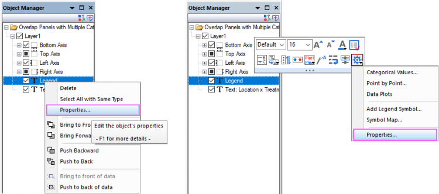
Diagrammobjektreihenfolge ändern
Sie können die folgenden Kontextmenüs verwenden - In den Vordergrund verschieben, Nach vorn verschieben, Nach hinten verschieben, In den Hintergrund verschieben, Vor die Daten verschieben und Hinter die Daten verschieben, um die Diagrammobjektreihenfolge der Layer anzupassen.
Oder Sie ziehen das Objekt einfach an die gewünschte Position. Bitte beachten Sie, dass die Achsenknoten nicht gezogen werden dürfen.
Mehrere Diagrammobjekte gruppieren/Gruppierung mehrerer Diagrammobjekte aufheben
Wählen Sie bei gedrückter Strg-Taste mehrere Diagrammobjekte in der Objektverwaltung, klicken Sie mit der rechten Maustaste auf sie und wählen Sie die Option Gruppe, um die ausgewählten Objekte zu gruppieren.
Um die Gruppierung der Objekte aufzuheben, klicken Sie mit der rechten Maustaste auf den Knoten Gruppe und wählen Sie Gruppierung aufheben.
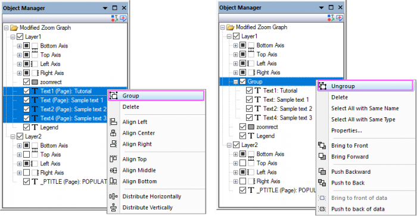
Mehrere Diagrammobjekte ausrichten
Sie können die Kontextmenüs Links ausrichten, Zentriert ausrichten, Rechts ausrichten, Oben ausrichten, Mittig ausrichten, Unten ausrichten, Horizontal verteilen und Vertikal verteilen verwenden, um mehrere Diagrammobjekte auszurichten. Die Minisymbolleistenschaltfläche  und die Schaltfläche auf der Symbolleiste Objekt bearbeiten können auch verwendet werden, um die Objekte auszurichten.
und die Schaltfläche auf der Symbolleiste Objekt bearbeiten können auch verwendet werden, um die Objekte auszurichten.
Beispiele: Objekte auswählen und benutzerdefiniert anpassen
- Mehrere Layer auswählen und benutzerdefiniert anpassen
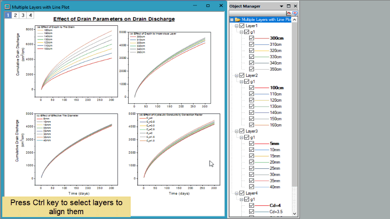
- Mehrere Zeichnungen auswählen und benutzerdefiniert anpassen
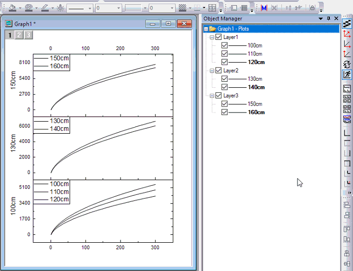
- Mehrere Diagrammobjekte auswählen und benutzerdefiniert anpassen

Wechselwirkung zwischen Objektverwaltung und Mappenfenster
Seit Origin 2020 listet die Objektverwaltung auch alle Blätter in der aktuellen Arbeitsmappe/Matrix auf und unterstützt die Interaktion mit einem Arbeitsmappen-/Matrixfenster auf Blattebene.
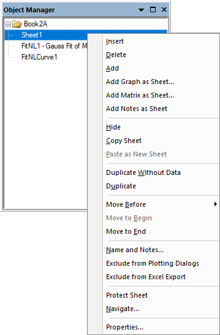
Bei aktivierten Minisymbolleisten bei einem aktiven Diagrammfenster wird die unten gezeigte Minisymbolleiste aufgerufen, wenn Sie eine Arbeitsmappe aktivieren und auf ein Blatt in der Objektverwaltung zu klicken:
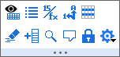
Klicken Sie mit der rechten Maustaste auf ein Blatt. Sie können die grundlegenden Operationen auf dem Blatt vom Kontextmenü aus durchführen, beispielsweise die Operationen, die über Kontextmenübefehle auf dem Arbeitsblattreiter selbst durchgeführt werden.
- Wählen Sie ein Blatt.
- Sie können auf einen Baumknoten klicken, um ein Blatt im Arbeitsmappen- oder Matrixfenster auszuwählen. Klicken Sie auf den Mappenknoten, um das erste Blatt zu aktivieren. Bitte beachten Sie, dass ein Doppelklick auf den Mappenknoten den Dialog Fenstereigenschaften öffnen kann.
- Wählen Sie mehrere Blätter aus,
- Sie können eine Mehrfachauswahl treffen, indem Sie die Strg-Taste drücken und nacheinander auf die Blätter klicken. Sie können mehrere Blätter auswählen, indem Sie die Shift-Taste drücken, während Sie die Pfeiltaste (nach oder unten) verwenden.
- Ein Blatt einfügen, hinzufügen und löschen
- Klicken Sie mit der rechten Maustaste auf einen Blattknoten. Sie können darüber ein neues Blatt einfügen, das aktuelle Blatt löschen oder ein neues Blatt am Ende hinzufügen.
- Weitere Fenster als ein Blatt hinzufügen
- Diagramm als Blatt hinzufügen, Matrix als Blatt hinzufügen oder Notizen als Blatt hinzufügen
- Blatt verbergen/zeigen
- Klicken Sie mit der rechten Maustaste auf ein Blatt, um die Option Verbergen auszuwählen, um das Blatt zu verbergen. Klicken Sie mit der rechten Maustaste auf ein verborgenes Blatt, um die Option Zeigen auszuwählen und es zu zeigen.
- Ein Blatt kopieren und einfügen
- Klicken Sie mit der rechten Maustaste auf den Blattreiter und wählen Sie im Kontextmenü Blatt kopieren und Als neues Blatt einfügen aus.
- Ein Blatt duplizieren
- Sie können Ohne Daten duplizieren oder Duplizieren auswählen, um das aktuelle Arbeitsblatt mit Daten oder ohne Daten zu duplizieren.
- Blätter verschieben und neu ordnen
- Sie können die Blätter per Drag&Drop verschieben oder die Menüelemente unter Verschieben verwenden, um sie neu zu ordnen.
- Ein Blatt kommentieren
- Sie können den Dialog Name und Notizen öffnen, um den Namen und die Kommentare für das aktuelle Blatt festzulegen.
- Ein Blatt aus dem Zeichendialog und Excel-Export ausschließen
- Sie können Blätter davon ausnehmen, im Dialog zum Zeichnen oder Exportieren von Excel-Dateien eingebunden zu sein.
- Ein Blatt schützen
- Klicken Sie mit der rechten Maustaste auf ein Blatt, um die Option Blatt schützen auszuwählen und den Dialog Optionen für Blattschutz aufzurufen. Hier können Sie entscheiden, wie der Blattinhalt geschützt werden soll.
- In Blättern navigieren
- Klicken Sie mit der rechten Maustaste auf ein Blatt, um Navigieren auszuwählen und den Dialog In Arbeitsblättern navigieren oder In Matrixblättern navigieren zu öffnen. Hier können Sie alle Blätter der aktuellen Mappen durchsuchen.
Benannte Datenbereiche in der Objektverwaltung
Die Bereiche mit Namen werden unter dem Arbeitsblatt, in dem sie definiert sind, aufgeführt.
-

- Der zugewiesene Bereich wird neben dem Bereichsnamen angezeigt.
- Das Symbol des Bereichs mit Namen weist auf den Umfang hin.
- Ein einzelner Klick auf einen Bereich mit Namen hebt den zugewiesenen Bereich im Arbeitsblatt hervor.
- Ein Doppelklick öffnet den Dialog Bereiche mit Namen verwalten, wobei der Bereich hervorgehoben ist.
Wechselwirkung zwischen Objektverwaltung und Layoutfenster
Die Objektverwaltung listet alle Objekte im aktuellen Layoutfenster auf und unterstützt die Interaktion mit den Objekten.
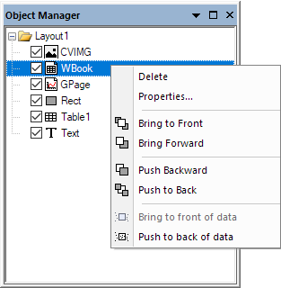
Zur Interaktion mit den Objekten lesen Sie bitte den Abschnitt Diagrammobjekte auf dieser Seite.
Interaktion zwischen Objektverwaltung und Bildfenster
Die Objektverwaltung listet alle ROI-Felder im aktuellen Bildfenster auf und unterstützt die Interaktion zwischen dem Bildfenster und der Objektverwaltung.
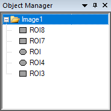
- Minisymbolleisten sind per Standard aktiviert. Wenn Sie auf den Namen des Bildfensters in der Objektverwaltung klicken, wird Ihnen die Minisymbolleiste auf Fensterebene angezeigt:
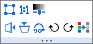
- Klicken Sie doppelt auf den Namen eines ROI-Felds in der Objektverwaltung, um den Dialog ROI-Position zu öffnen, oder klicken Sie mit der rechten Maustaste auf ein ROI-Feld und wählen Sie die Elemente des Kontextmenüs. Sie können die einfachen Operationen für das ROI-Feld durchführen, wie die Operationen, die durch Doppel- oder Rechtsklick auf das ROI-Feld im Bildfenster durchgeführt werden. Außerdem können Sie durch Rechtsklick das ROI-Feld direkt umbenennen und löschen.
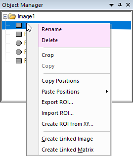